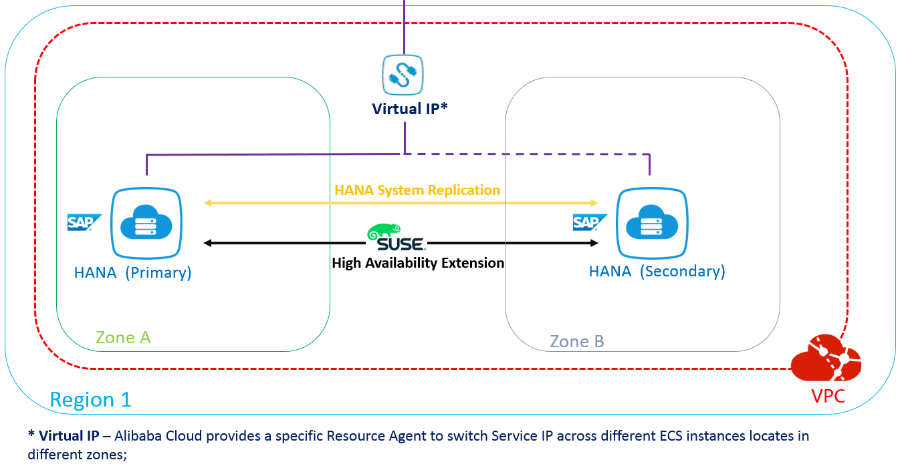
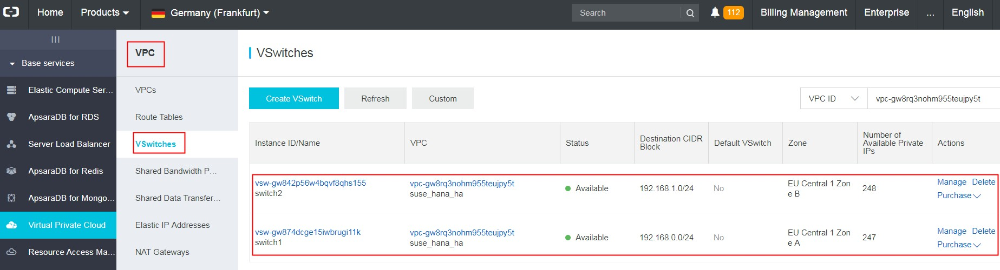
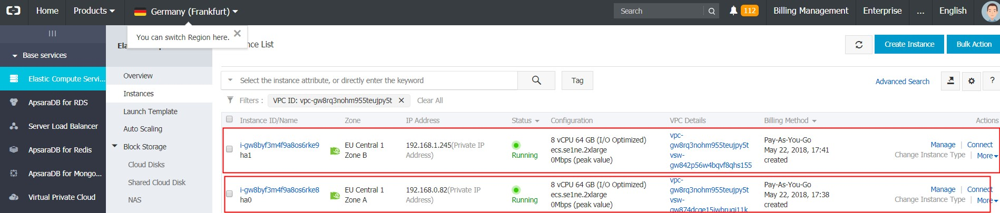
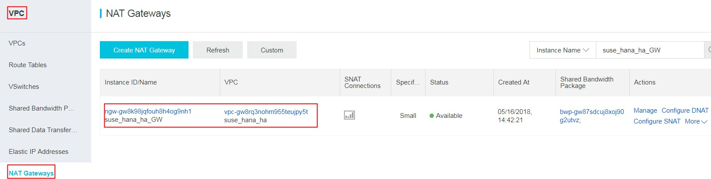
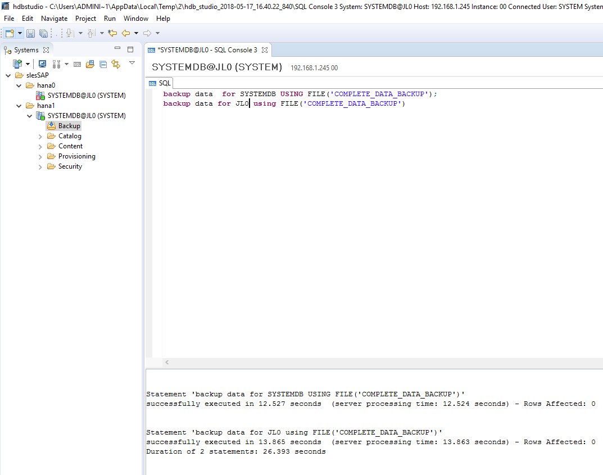
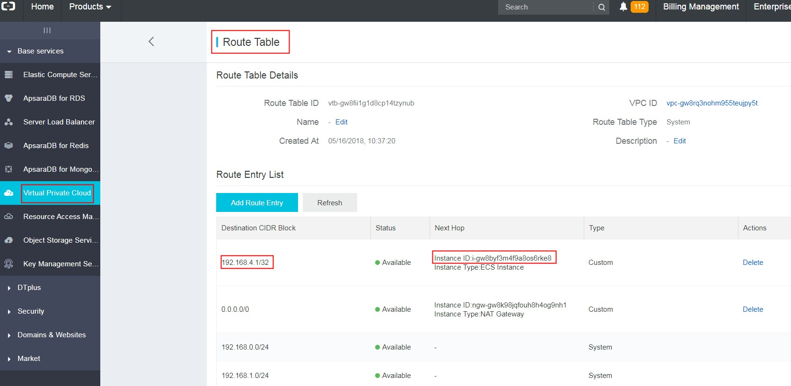

With SUSE Linux Enterprise Server for SAP Applications
Abstract
SUSE® Linux Enterprise Server for SAP Applications is optimized in various ways for SAP* applications. This document explains how to deploy an SAP HANA High Availability solution cross different Zones on Alibaba Cloud. It is based on SUSE Linux Enterprise Server for SAP Applications 12 SP2. The concept however can also be used with SUSE Linux Enterprise Server for SAP Applications 12 SP3 or newer.
Disclaimer: Documents published as part of the SUSE Best Practices series have been contributed voluntarily by SUSE employees and third parties. They are meant to serve as examples of how particular actions can be performed. They have been compiled with utmost attention to detail. However, this does not guarantee complete accuracy. SUSE cannot verify that actions described in these documents do what is claimed or whether actions described have unintended consequences. SUSE LLC, its affiliates, the authors, and the translators may not be held liable for possible errors or the consequences thereof.
Table of Contents
SAP HANA provides a feature called System Replication which is available in every SAP HANA installation. It offers an inherent disaster recovery support.
For details, refer to the SAP Help Portal, HANA system replication:
The SUSE High Availability Extension is a high availability solution based on Corosync and Pacemaker. With SUSE Linux Enterprise Server for SAP Applications, SUSE provides SAP specific Resource Agents (SAPHana, SAPHanaTopology etc.) used by Pacemaker. This helps you to build your SAP HANA HA solution up more effectively.
For details, refer to the latest version of the document SAP HANA SR Performance Optimized Scenario at the SUSE documentation Web page:
This document guides you on how to deploy an SAP HANA High Availability (HA) solution cross different Zones. The following list contains a brief architecture overview:
The High Availability Extension included with SUSE Linux Enterprise Server for SAP Applications is used to set up the HA Cluster;
SAP HANA System Replication is activated between the two HANA nodes;
Two HANA nodes are located in different Zones of the same Region;
The Alibaba Cloud Specific Virtual IP Resource Agent is used to allow Moving IP automatically switched to Active SAP HANA node; the Alibaba Cloud specific STONITH device is used for fencing.
Alibaba Cloud Architecture - Overview:
|  |
Network Architecture - Overview:
 |
The next sections contain information about how to prepare the infrastructure.
To set up your infrastructure, the following components are required:
1 Virtual Private Cloud (VPC) network; Virtual Private Cloud
2 Elastic Compute Service (ECS) instances in different zones of the same VPC; Elastic Compute Service
2 Elastic Network Interfaces (ENI) - one for each ECS instance; Elastic network interfaces
Alibaba Cloud specific Virtual IP Resource Agent and STONITH device;
NAT Gateway and SNAT entry; NAT Gateway
First, create a VPC via Console→Virtual Private Cloud→VPCs→Create VPC. In this example, a VPC named suse_hana_ha in the Region EU Central 1 (Frankfurt) has been created:
 |
There should be at least two VSwitches (subnets) defined within the VPC network. Each VSwitch should be bound to a different Zone. In this example, the following two VSwitches (subnets) are defined:
Switch1 192.168.0.0/24 Zone A, for SAP HANA Primary Node;
Switch2 192.168.1.0/24 Zone B, for SAP HANA Secondary Node;
|  |
Two ECS instances are created in different Zones of the same VPC via Console→Elastic Compute Service ECS→Instances→Create Instance. Choose the "SUSE Linux Enterprise Server for SAP Applications" image from the Image Market place.
In this example, two ECS instances (hostname: hana0 and hana1) are created in the Region EU Central 1, Zone A and Zone B, within the VPC: suse_hana_ha, with SUSE Linux Enterprise Server for SAP Applications 12 SP2 image from the Image Market Place. Host hana0 is the primary SAP HANA database node, and hana1 is the secondary SAP HANA database node.
|  |
Create two ENIs via Console→ Elastic Compute Service ECS→Network and Security→ENI, and attach one for each ECS instance, for HANA System Replication purposes. Configure the IP addresses of the ENIs to the subnet for HANA System Replication only.
In this example, the ENIs are attached to the ECS instances hana0 and hana1. In addition, the IP addresses are configured as 192.168.0.83 and 192.168.1.246 within the same VSwitches of hana0 and hana1, and put into the VPC: suse_hana_ha
Meanwhile, within the Guest OS, /etc/hosts should also be configured.
According to the example at hand, run the following two commands on both sites:
echo "192.168.0.82 hana0 hana0" >> /etc/hosts echo "192.168.1.245 hana1 hana1" >> /etc/hosts
The output looks as follows:
 |
Now create an NAT Gateway attached to the given VPC. In the example at hand, an NAT Gateway named suse_hana_ha_GW has been created:
|  |
After having creating the NAT Gateway, you need to create a corresponding SNAT entry to allow ECS instances within the VPC to access public addresses on the Internet.
Note
An Alibaba Cloud specific STONITH device and Virtual IP Resource Agent are mandatory for the cluster. They need to access Alibaba Cloud OpenAPI through a public domain.
In the example at hand, two SNAT entries have been created, for ECS instances located in a different network range:
Download the STONITH fencing software with the following command:
wget http://sap-automation-cn-beijing.oss-cn-beijing.aliyuncs.com/software/aliyun-pacemaker_new.zip
For an HA solution, a fencing device is an essential requirement. Alibaba Cloud provides its own STONITH device, which allows the servers in the HA cluster to shut down the node that is not responsive. The STONITH device leverages Alibaba Cloud OpenAPI underneath the ECS instance, which is similar to a physical reset / shutdown in an on-premise environment.
 |
Extract the package and install the software.
tar –xvf aliyun-ecs-pacemaker.tar.gz ./install
Install Alibaba Cloud OpenAPI SDK.
pip install aliyun-python-sdk-ecs aliyun-python-sdk-vpc aliyuncli
Configure Alibaba Cloud OpenAPI SDK and Client.
aliyuncli configure
Get your Access Key as shown below:
 |
The next sections contain information about the required software.
The following software must be available: - SUSE Linux Enterprise Server for SAP Applications 12 SP2 or newer - HANA Installation Media - SAP Host Agent Installation Media
Both ECS instances are created with the SUSE Linux Enterprise Server for SAP Applications image. On both ECS instances, the High Availability Extension (with the major software components: Corosync and Pacemaker), and the package SAPHanaSR should be installed. To do so, you can use zypper.
First, install the pattern High Availability Extension on both nodes:
zypper in -t pattern ha_sles
Now, install the Resource Agents for controlling the SAP HANA system replication on both cluster nodes:
zypper in SAPHanaSR SAPHanaSR-doc
Next, install the SAP HANA software on both ECS instances. Make sure the SAP HANA SID and Instance Number are the same (this is required by SAP HANA System Replication). It is recommended to use hdblcm to do the installation. For details refer to the SAP HANA Server Installation and Update Guide at https://help.sap.com/viewer/2c1988d620e04368aa4103bf26f17727/2.0.03/en-US.
In the example at hand, both node are installed with SAP HANA (Rev. 2.00.030.00), and SID: JL0, Instance Number: 00.
 |
When you have finished the HANA installation with hdblcm as mentioned above, the SAP Host Agent should already be installed on your server. To install it manually, refer to the article Installing SAP Host Agent Manually: https://help.sap.com/saphelp_nw73ehp1/helpdata/en/8b/92b1cf6d5f4a7eac40700295ea687f/content.htm?no_cache=true.
Check the SAP Host Agent status after you have installed SAP HANA with hdblcm on hana0 and hana1:
 |
The following sections detail how to configure SAP HANA System Replication.
To do a backup on SAP HANA, you can either use SAP HANA studio or hdbsql as the client command tool.
The backup command is
For HANA 1 single container mode:
BACKUP DATA USING FILE('COMPLETE_DATA_BACKUP');For HANA 2 with multitenant as default mode (You should back up systemDB and all tenantDB as shown below in the example):
BACKUP DATA for <DATABASE> using FILE('COMPLETE_DATA_BACKUP')Command line example:
BACKUP DATA for SYSTEMDB using FILE('COMPLETE_DATA_BACKUP')BACKUP DATA for JL0 using FILE('COMPLETE_DATA_BACKUP')In this example for HDB Studio, the SAP HANA database backup is executed on both ECS instances as shown below:
|  |
Log on to the primary node with: su - <sid>adm.
[sidadm] should be replaced by your SAP HANA database SID. In our example it is su - jl0adm;
Stop HANA with: HDB stop.
Change the following file content:
vi /hana/shared/<SID>/global/hdb/custom/config/global.ini
Add the following content:
[system_replication_hostname_resolution] <IP> = <HOSTNAME>
[IP] should be the address of the ENI (heartbeat IP address for SAP HANA system replication) attached to the Secondary node;
[HOSTNAME] should be the hostname of the Secondary node;
In the example at hand, the configuration is as follows:
[system_replication_hostname_resolution] 192.168.1.246 = hana1
Perform the same steps as outlined above for the Primary node on the Secondary node. However, do not forget to use here the IP and hostname of the Primary node instead of the Secondary node.
In the example at hand, the configuration is as follows:
[system_replication_hostname_resolution] 192.168.0.83 = hana0
Log on to the primary node with: su - <sid>adm;
Start HANA with: HDB start;
Enable System Replication with:
hdbnsutil -sr_enable --name= [primary location name]
[primary location name] should be replaced by the location of your primary SAP HANA node.
For the example at hand, the following command is used:
hdbnsutil -sr_enable --name=hana0
Note
All of the above operations are done on the Primary node.
Log on to the secondary node with: su - <sid>adm;
Stop SAP HANA with: HDB stop;
Register the Secondary SAP HANA node to the Primary SAP HANA node by running the following command:
hdbnsutil -sr_register --remoteHost=[location of primary Node] --remoteInstance=[instance number of primary node] --replicationMode=sync --name=[location of the secondary node] --operationMode=logreplay
For the example at hand, the following command is used:
hdbnsutil -sr_register --name=hana1 --remoteHost=hana0 --remoteInstance=00 --replicationMode=sync --operationMode=logreplay
Start SAP HANA with: HDB start;
Verify the System Replication Status with the following command:
hdbnsutil -sr_state
In the example at hand, the following status is displayed on the secondary SAP HANA node hana1:
Note
All of the above operations are done on the Secondary node.
It is recommended that you add more redundancy for messaging (Heartbeat) by using separate ENIs attached to the ECS instances with a separate network range.
On Alibaba Cloud, it is strongly suggested to only use Unicast for the transport setting in Corosync.
Follow the steps below to configure Corosync:
Create Keys
Run corosync-keygen on the Primary SAP HANA node. The generated key will be located in the file: /etc/corosync/authkey.
In the example at hand, the command is executed on hana1:
Configure /etc/corosync/corosync.conf as root on the Primary SAP HANA node with the following content:
totem {
version: 2
token: 5000
token_retransmits_before_loss_const: 6
secauth: on
crypto_hash: sha1
crypto_cipher: aes256
clear_node_high_bit: yes
interface {
ringnumber: 0
bindnetaddr: **IP-address-for-heart-beating-for-the-current-server**
mcastport: 5405
ttl: 1
}
# On Alibaba Cloud, transport should be set to udpu, means: unicast
transport: udpu
}
logging {
fileline: off
to_logfile: yes
to_syslog: yes
logfile: /var/log/cluster/corosync.log
debug: off
timestamp: on
logger_subsys {
subsys: QUORUM
debug: off
}
}
nodelist {
node {
ring0_addr: **ip-node-1**
nodeid: 1
}
node {
ring0_addr: **ip-node-2**
nodeid: 2
}
}
quorum {
# Enable and configure quorum subsystem (default: off)
# see also corosync.conf.5 and votequorum.5
provider: corosync_votequorum
expected_votes: 2
two_node: 1
}IP-address-for-heart-beating-for-the-current-server should be replaced by the IP address of the current server, used for messaging (heartbeat) or SAP HANA System Replication. In the example at hand, the IP address of ENI of the current node (192.168.0.83 for hana0 and 192.168.1.246 for hana1) is used.
Note
This value will be different on Primary and Secondary node. The nodelist directive is used to list all nodes in the cluster.
ip-node-1 and ip-node-2 should be replaced by the IP addresses of the ENIs attached to ECS instances for Heartbeat purpose or HANA System Replication purpose. In the example at hand, it should be 192.168.0.83 for hana0 and 192.168.1.246 for hana1.
After completing the editing of /etc/corosync/corosync.conf on the Primary HANA node, copy the files /etc/corosync/authkey and /etc/corosync/corosync.conf to /etc/corosync on the Secondary SAP HANA node with the following command:
scp /etc/corosync/authkey root@**hostnameOfSecondaryNode**:/etc/corosync
In the example at hand, the following command is executed:
After you have copied the corosync.conf to the Secondary node, configure the bindnetaddr as above to the local heart beating IP address.
For the SAP HANA High Availability solution, you need to configure seven resources and the corresponding constraints in Pacemaker.
Note
The following Pacemaker configuration only needs to be done on one node. It is usually done on the Primary node.
Add the configuration of the bootstrap and default setting of the resource and operations to the cluster. Save the following scripts in a file: crm-bs.txt.
property $id='cib-bootstrap-options' \
stonith-enabled="true" \
stonith-action="off" \
stonith-timeout="150s"
rsc_defaults $id="rsc-options" \
resource-stickness="1000" \
migration-threshold="5000"
op_defaults $id="op-options" \
timeout="600"Execute the command below to add the setting to the cluster:
crm configure load update crm-bs.txt
This part defines the Aliyun STONITH devices in the cluster.
Save the following scripts in a file for SLES12 SP2 and older releases: crm-stonith.txt.
primitive res_ALIYUN_STONITH_1 stonith:fence_aliyun \
op monitor interval=120 timeout=60 \
params pcmk_host_list=<primary node hostname> port=<primary node instance id> \
access_key=<access key> secret_key=<secret key> \
region=<region> \
meta target-role=Started
primitive res_ALIYUN_STONITH_2 stonith:fence_aliyun \
op monitor interval=120 timeout=60 \
params pcmk_host_list=<secondary node hostname> port=<secondary node instance id> \
access_key=<access key> secret_key=<secret key> \
region=<region> \
meta target-role=Started
location loc_<primary node hostname>_stonith_not_on_<primary node hostname> res_ALIYUN_STONITH_1 -inf: <primary node hostname>
#Stonith 1 should not run on primary node because it is controlling primary node
location loc_<secondary node hostname>_stonith_not_on_<secondary node hostname> res_ALIYUN_STONITH_2 -inf: <secondary node hostname>
#Stonith 2 should not run on secondary node because it is controlling secondary nodeSave the following scripts in a file for SLES12 SP3 and newer releases: crm-stonith.txt.
primitive res_ALIYUN_STONITH_1 stonith:fence_aliyun \
op monitor interval=120 timeout=60 \
params plug=<primary node instance id> \
access_key=<access key> secret_key=<secret key> \
region=<region> \
meta target-role=Started
primitive res_ALIYUN_STONITH_2 stonith:fence_aliyun \
op monitor interval=120 timeout=60 \
params plug=<secondary node instance id> \
access_key=<access key> secret_key=<secret key> \
region=<region> \
meta target-role=Started
location loc_<primary node hostname>_stonith_not_on_<primary node hostname> res_ALIYUN_STONITH_1 -inf: <primary node hostname>
#Stonith 1 should not run on primary node because it is controlling primary node
location loc_<secondary node hostname>_stonith_not_on_<secondary node hostname> res_ALIYUN_STONITH_2 -inf: <secondary node hostname>
#Stonith 2 should not run on secondary node because it is controlling secondary nodeBe sure to implement the following changes:
[primary node hostname] / [secondary node hostname] should be replaced by the real hostname of your primary and secondary hostname, in our case is hana0 and hana1.
[primary node instance id] / [secondary node instance id] should be replaced by the real instance-id of your ECS instance, you can get this from the Alibaba Cloud console. For SLES 12 SP3 or newer releases, please use plug instead of port.
[access key] should be replaced with real access key.
[secret key] should be replaced with real secret key.
[region] should be replaced with real region name where the node is located.
Execute the command below to add the resource to the cluster:
crm configure load update crm-stonith.txt
This part defines an SAPHanaTopology RA, and a clone of the SAPHanaTopology on both nodes in the cluster. Save the following scripts in a file: crm-saphanatop.txt.
primitive rsc_SAPHanaTopology_<SID>_HDB<instance number> ocf:suse:SAPHanaTopology \
operations $id="rsc_SAPHanaTopology_<SID>_HDB<instance number>-operations" \
op monitor interval="10" timeout="600" \
op start interval="0" timeout="600" \
op stop interval="0" timeout="300" \
params SID="<SID>" InstanceNumber="<instance number>"
clone cln_SAPHanaTopology_<SID>_HDB<instance number> rsc_SAPHanaTopology_<SID>_HDB<instance number> \
meta clone-node-max="1" interleave="true"Be sure to implement the following changes:
[SID] should be replaced by the real SAP HANA SID.
[instance number] should be replaced by the real SAP HANA Instance Number.
Execute the command below to add the resources to the cluster:
crm configure load update crm-saphanatop.txt
This part defines an SAPHana RA, and a multi-state resource of SAPHana on both nodes in the cluster. Save the following scripts in a file: crm-saphana.txt.
primitive rsc_SAPHana_<SID>_HDB<instance number> ocf:suse:SAPHana \
operations $id="rsc_SAPHana_<SID>_HDB<instance number>-operations" \
op start interval="0" timeout="3600" \
op stop interval="0" timeout="3600" \
op promote interval="0" timeout="3600" \
op monitor interval="60" role="Master" timeout="700" \
op monitor interval="61" role="Slave" timeout="700" \
params SID="<SID>" InstanceNumber="<instance number>" PREFER_SITE_TAKEOVER="true" \
DUPLICATE_PRIMARY_TIMEOUT="7200" AUTOMATED_REGISTER="false"
ms msl_SAPHana_<SID>_HDB<instance number> rsc_SAPHana_<SID>_HDB<instance number> \
meta clone-max="2" clone-node-max="1" interleave="true"Be sure to implement the following changes:
[SID] should be replaced by the real SAP HANA SID.
[instance number] should be replaced by the real SAP HANA Instance Number.
Execute the command below to add the resources to the cluster:
crm configure load update crm-saphana.txt
This part defines a Virtual IP RA in the cluster. Save the following scripts in a file: crm-vip.txt.
primitive res_vip_<SID>_HDB<instance number> ocf:aliyun:vpc-move-ip \ op monitor interval=60 \ meta target-role=Started \ params address=<virtual_IPv4_address> routing_table=<route_table_ID> interface=eth0
Be sure to implement the following changes:
[virtual_IP4_address] should be replaced by the real IP address you prefer to provide the service.
[route_table_ID] should be replaced by the route table ID of your VPC.
[SID] should be replaced by the real SAP HANA SID.
[instance number] should be replaced by the real SAP HANA Instance Number.
Execute the command below to add the resource to the cluster:
crm configure load update crm-vip.txt
Two constraints are organizing the correct placement of the virtual IP address for the client database access and the start order between the two resource agents SAPHana and SAPHanaTopology. Save the following scripts in a file: crm-constraint.txt.
colocation col_SAPHana_vip_<SID>_HDB<instance number> 2000: rsc_vip_<SID>_HDB<instance number>:started \
msl_SAPHana_<SID>_HDB<instance number>:Master
order ord_SAPHana_<SID>_HDB<instance number> Optional: cln_SAPHanaTopology_<SID>_HDB<instance number> \
msl_SAPHana_<SID>_HDB<instance number>Be sure to implement the following changes:
[SID] should be replaced by the real SAP HANA SID;
[instance number] should be replaced by the real SAP HANA Instance Number;
Execute the command below to add the resource to the cluster:
crm configure load update crm-constraint.txt
Start the SAP HANA High Availability Cluster on both nodes:
systemctl start Pacemaker
Monitor the SAP HANA High Availability Cluster with the following commands:
systemctl status pacemaker crm_mon –r
In the example at hand, the result looks as follows:
 |
Meanwhile, check if a new entry [virtual_IP4_address] is added into the route table of the VPC.
In the example at hand, the following result is shown:
|  |


You can check the cluster configuration via the command crm configure show.
For the example at hand, the cluster configuration should display the following content:
node 1: hana0 \ attributes hana_jl0_vhost=hana0 hana_jl0_srmode=sync hana_jl0_remoteHost=hana1 hana_jl0_site=hana0 lpa_jl0_lpt=10 hana_jl0_op_mode=logreplay node 2: hana1 \ attributes lpa_jl0_lpt=1529509236 hana_jl0_op_mode=logreplay hana_jl0_vhost=hana1 hana_jl0_site=hana1 hana_jl0_srmode=sync hana_jl0_remoteHost=hana0 primitive res_ALIYUN_STONITH_0 stonith:fence_aliyun \ op monitor interval=120 timeout=60 \ params pcmk_host_list=hana0 port=i-gw8byf3m4f9a8os6rke8 access_key=<access key> secret_key=<secret key> region=eu-central-1 \ meta target-role=Started primitive res_ALIYUN_STONITH_1 stonith:fence_aliyun \ op monitor interval=120 timeout=60 \ params pcmk_host_list=hana1 port=i-gw8byf3m4f9a8os6rke9 access_key=<access key> secret_key=<secret key> region=eu-central-1 \ meta target-role=Started primitive rsc_SAPHanaTopology_JL0_HDB00 ocf:suse:SAPHanaTopology \ operations $id=rsc_SAPHanaTopology_JL0_HDB00-operations \ op monitor interval=10 timeout=600 \ op start interval=0 timeout=600 \ op stop interval=0 timeout=300 \ params SID=JL0 InstanceNumber=00 primitive rsc_SAPHana_JL0_HDB00 ocf:suse:SAPHana \ operations $id=rsc_SAPHana_JL0_HDB00-operations \ op start interval=0 timeout=3600 \ op stop interval=0 timeout=3600 \ op promote interval=0 timeout=3600 \ op monitor interval=60 role=Master timeout=700 \ op monitor interval=61 role=Slave timeout=700 \ params SID=JL0 InstanceNumber=00 PREFER_SITE_TAKEOVER=true DUPLICATE_PRIMARY_TIMEOUT=7200 AUTOMATED_REGISTER=false primitive rsc_vip_JL0_HDB00 ocf:aliyun:vpc-move-ip \ op monitor interval=60 \ meta target-role=Started \ params address=192.168.4.1 routing_table=vtb-gw8fii1g1d8cp14tzynub interface=eth0 ms msl_SAPHana_JL0_HDB00 rsc_SAPHana_JL0_HDB00 \ meta clone-max=2 clone-node-max=1 interleave=true target-role=Started clone cln_SAPHanaTopology_JL0_HDB00 rsc_SAPHanaTopology_JL0_HDB00 \ meta clone-node-max=1 interleave=true colocation col_SAPHana_vip_JL0_HDB00 2000: rsc_vip_JL0_HDB00:Started msl_SAPHana_JL0_HDB00:Master location loc_hana0_stonith_not_on_hana0 res_ALIYUN_STONITH_0 -inf: hana0 location loc_hana1_stonith_not_on_hana1 res_ALIYUN_STONITH_1 -inf: hana1 order ord_SAPHana_JL0_HDB00 Optional: cln_SAPHanaTopology_JL0_HDB00 msl_SAPHana_JL0_HDB00 property cib-bootstrap-options: \ have-watchdog=false \ dc-version=1.1.15-21.1-e174ec8 \ cluster-infrastructure=corosync \ stonith-action=off \ stonith-enabled=true \ stonith-timeout=150s \ last-lrm-refresh=1529503606 \ maintenance-mode=false rsc_defaults rsc-options: \ resource-stickness=1000 \ migration-threshold=5000 op_defaults op-options: \ timeout=600
For the example at hand, the corosync.conf on hana1 should display the following content:
totem{
version: 2
token: 5000
token_retransmits_before_loss_const: 6
secauth: on
crypto_hash: sha1
crypto_cipher: aes256
clear_node_high_bit: yes
interface {
ringnumber: 0
bindnetaddr: 192.168.0.83
mcastport: 5405
ttl: 1
}
# On Alibaba Cloud, transport should be set to udpu, means: unicast
transport: udpu
}
logging {
fileline: off
to_logfile: yes
to_syslog: yes
logfile: /var/log/cluster/corosync.log
debug: off
timestamp: on
logger_subsys {
subsys: QUORUM
debug: off
}
}
nodelist {
node {
ring0_addr: 192.168.0.83
nodeid: 1
}
node {
ring0_addr: 192.168.1.246
nodeid: 2
}
}
quorum {
# Enable and configure quorum subsystem (default: off)
# see also corosync.conf.5 and votequorum.5
provider: corosync_votequorum
expected_votes: 2
two_node: 1
}Pacemaker 1.1 Configuration Explained https://clusterlabs.org/pacemaker/doc/en-US/Pacemaker/1.1/html/Pacemaker_Explained/.
SAP HANA SR Performance Optimized Scenario https://www.suse.com/media/white-paper/suse_linux_enterprise_server_for_sap_applications_12_sp1.pdf.
SAP HANA system replication - SAP Help Portal https://help.sap.com/viewer/6b94445c94ae495c83a19646e7c3fd56/2.0.03/en-US/b74e16a9e09541749a745f41246a065e.html.
SAP Applications on Alibaba Cloud: Supported Products and IaaS VM Types https://launchpad.support.sap.com/#/notes/2552731
Copyright © 2006–2022 SUSE LLC and contributors. All rights reserved.
Permission is granted to copy, distribute and/or modify this document under the terms of the GNU Free Documentation License, Version 1.2 or (at your option) version 1.3; with the Invariant Section being this copyright notice and license. A copy of the license version 1.2 is included in the section entitled "GNU Free Documentation License".
SUSE, the SUSE logo and YaST are registered trademarks of SUSE LLC in the United States and other countries. For SUSE trademarks, see https://www.suse.com/company/legal/.
Linux is a registered trademark of Linus Torvalds. All other names or trademarks mentioned in this document may be trademarks or registered trademarks of their respective owners.
Documents published as part of the SUSE Best Practices series have been contributed voluntarily by SUSE employees and third parties. They are meant to serve as examples of how particular actions can be performed. They have been compiled with utmost attention to detail. However, this does not guarantee complete accuracy. SUSE cannot verify that actions described in these documents do what is claimed or whether actions described have unintended consequences. SUSE LLC, its affiliates, the authors, and the translators may not be held liable for possible errors or the consequences thereof.
Below we draw your attention to the license under which the articles are published.
Copyright © 2000, 2001, 2002 Free Software Foundation, Inc. 51 Franklin St, Fifth Floor, Boston, MA 02110-1301 USA. Everyone is permitted to copy and distribute verbatim copies of this license document, but changing it is not allowed.
0. PREAMBLE
The purpose of this License is to make a manual, textbook, or other functional and useful document "free" in the sense of freedom: to assure everyone the effective freedom to copy and redistribute it, with or without modifying it, either commercially or noncommercially. Secondarily, this License preserves for the author and publisher a way to get credit for their work, while not being considered responsible for modifications made by others.
This License is a kind of "copyleft", which means that derivative works of the document must themselves be free in the same sense. It complements the GNU General Public License, which is a copyleft license designed for free software.
We have designed this License in order to use it for manuals for free software, because free software needs free documentation: a free program should come with manuals providing the same freedoms that the software does. But this License is not limited to software manuals; it can be used for any textual work, regardless of subject matter or whether it is published as a printed book. We recommend this License principally for works whose purpose is instruction or reference.
1. APPLICABILITY AND DEFINITIONS
This License applies to any manual or other work, in any medium, that contains a notice placed by the copyright holder saying it can be distributed under the terms of this License. Such a notice grants a world-wide, royalty-free license, unlimited in duration, to use that work under the conditions stated herein. The "Document", below, refers to any such manual or work. Any member of the public is a licensee, and is addressed as "you". You accept the license if you copy, modify or distribute the work in a way requiring permission under copyright law.
A "Modified Version" of the Document means any work containing the Document or a portion of it, either copied verbatim, or with modifications and/or translated into another language.
A "Secondary Section" is a named appendix or a front-matter section of the Document that deals exclusively with the relationship of the publishers or authors of the Document to the Document’s overall subject (or to related matters) and contains nothing that could fall directly within that overall subject. (Thus, if the Document is in part a textbook of mathematics, a Secondary Section may not explain any mathematics.) The relationship could be a matter of historical connection with the subject or with related matters, or of legal, commercial, philosophical, ethical or political position regarding them.
The "Invariant Sections" are certain Secondary Sections whose titles are designated, as being those of Invariant Sections, in the notice that says that the Document is released under this License. If a section does not fit the above definition of Secondary then it is not allowed to be designated as Invariant. The Document may contain zero Invariant Sections. If the Document does not identify any Invariant Sections then there are none.
The "Cover Texts" are certain short passages of text that are listed, as Front-Cover Texts or Back-Cover Texts, in the notice that says that the Document is released under this License. A Front-Cover Text may be at most 5 words, and a Back-Cover Text may be at most 25 words.
A "Transparent" copy of the Document means a machine-readable copy, represented in a format whose specification is available to the general public, that is suitable for revising the document straightforwardly with generic text editors or (for images composed of pixels) generic paint programs or (for drawings) some widely available drawing editor, and that is suitable for input to text formatters or for automatic translation to a variety of formats suitable for input to text formatters. A copy made in an otherwise Transparent file format whose markup, or absence of markup, has been arranged to thwart or discourage subsequent modification by readers is not Transparent. An image format is not Transparent if used for any substantial amount of text. A copy that is not "Transparent" is called "Opaque".
Examples of suitable formats for Transparent copies include plain ASCII without markup, Texinfo input format, LaTeX input format, SGML or XML using a publicly available DTD, and standard-conforming simple HTML, PostScript or PDF designed for human modification. Examples of transparent image formats include PNG, XCF and JPG. Opaque formats include proprietary formats that can be read and edited only by proprietary word processors, SGML or XML for which the DTD and/or processing tools are not generally available, and the machine-generated HTML, PostScript or PDF produced by some word processors for output purposes only.
The "Title Page" means, for a printed book, the title page itself, plus such following pages as are needed to hold, legibly, the material this License requires to appear in the title page. For works in formats which do not have any title page as such, "Title Page" means the text near the most prominent appearance of the work’s title, preceding the beginning of the body of the text.
A section "Entitled XYZ" means a named subunit of the Document whose title either is precisely XYZ or contains XYZ in parentheses following text that translates XYZ in another language. (Here XYZ stands for a specific section name mentioned below, such as "Acknowledgements", "Dedications", "Endorsements", or "History".) To "Preserve the Title" of such a section when you modify the Document means that it remains a section "Entitled XYZ" according to this definition.
The Document may include Warranty Disclaimers next to the notice which states that this License applies to the Document. These Warranty Disclaimers are considered to be included by reference in this License, but only as regards disclaiming warranties: any other implication that these Warranty Disclaimers may have is void and has no effect on the meaning of this License.
2. VERBATIM COPYING
You may copy and distribute the Document in any medium, either commercially or noncommercially, provided that this License, the copyright notices, and the license notice saying this License applies to the Document are reproduced in all copies, and that you add no other conditions whatsoever to those of this License. You may not use technical measures to obstruct or control the reading or further copying of the copies you make or distribute. However, you may accept compensation in exchange for copies. If you distribute a large enough number of copies you must also follow the conditions in section 3.
You may also lend copies, under the same conditions stated above, and you may publicly display copies.
3. COPYING IN QUANTITY
If you publish printed copies (or copies in media that commonly have printed covers) of the Document, numbering more than 100, and the Document’s license notice requires Cover Texts, you must enclose the copies in covers that carry, clearly and legibly, all these Cover Texts: Front-Cover Texts on the front cover, and Back-Cover Texts on the back cover. Both covers must also clearly and legibly identify you as the publisher of these copies. The front cover must present the full title with all words of the title equally prominent and visible. You may add other material on the covers in addition. Copying with changes limited to the covers, as long as they preserve the title of the Document and satisfy these conditions, can be treated as verbatim copying in other respects.
If the required texts for either cover are too voluminous to fit legibly, you should put the first ones listed (as many as fit reasonably) on the actual cover, and continue the rest onto adjacent pages.
If you publish or distribute Opaque copies of the Document numbering more than 100, you must either include a machine-readable Transparent copy along with each Opaque copy, or state in or with each Opaque copy a computer-network location from which the general network-using public has access to download using public-standard network protocols a complete Transparent copy of the Document, free of added material. If you use the latter option, you must take reasonably prudent steps, when you begin distribution of Opaque copies in quantity, to ensure that this Transparent copy will remain thus accessible at the stated location until at least one year after the last time you distribute an Opaque copy (directly or through your agents or retailers) of that edition to the public.
It is requested, but not required, that you contact the authors of the Document well before redistributing any large number of copies, to give them a chance to provide you with an updated version of the Document.
4. MODIFICATIONS
You may copy and distribute a Modified Version of the Document under the conditions of sections 2 and 3 above, provided that you release the Modified Version under precisely this License, with the Modified Version filling the role of the Document, thus licensing distribution and modification of the Modified Version to whoever possesses a copy of it. In addition, you must do these things in the Modified Version:
Use in the Title Page (and on the covers, if any) a title distinct from that of the Document, and from those of previous versions (which should, if there were any, be listed in the History section of the Document). You may use the same title as a previous version if the original publisher of that version gives permission.
List on the Title Page, as authors, one or more persons or entities responsible for authorship of the modifications in the Modified Version, together with at least five of the principal authors of the Document (all of its principal authors, if it has fewer than five), unless they release you from this requirement.
State on the Title page the name of the publisher of the Modified Version, as the publisher.
Preserve all the copyright notices of the Document.
Add an appropriate copyright notice for your modifications adjacent to the other copyright notices.
Include, immediately after the copyright notices, a license notice giving the public permission to use the Modified Version under the terms of this License, in the form shown in the Addendum below.
Preserve in that license notice the full lists of Invariant Sections and required Cover Texts given in the Document’s license notice.
Include an unaltered copy of this License.
Preserve the section Entitled "History", Preserve its Title, and add to it an item stating at least the title, year, new authors, and publisher of the Modified Version as given on the Title Page. If there is no section Entitled "History" in the Document, create one stating the title, year, authors, and publisher of the Document as given on its Title Page, then add an item describing the Modified Version as stated in the previous sentence.
Preserve the network location, if any, given in the Document for public access to a Transparent copy of the Document, and likewise the network locations given in the Document for previous versions it was based on. These may be placed in the "History" section. You may omit a network location for a work that was published at least four years before the Document itself, or if the original publisher of the version it refers to gives permission.
For any section Entitled "Acknowledgements" or "Dedications", Preserve the Title of the section, and preserve in the section all the substance and tone of each of the contributor acknowledgements and/or dedications given therein.
Preserve all the Invariant Sections of the Document, unaltered in their text and in their titles. Section numbers or the equivalent are not considered part of the section titles.
Delete any section Entitled "Endorsements". Such a section may not be included in the Modified Version.
Do not retitle any existing section to be Entitled "Endorsements" or to conflict in title with any Invariant Section.
Preserve any Warranty Disclaimers.
If the Modified Version includes new front-matter sections or appendices that qualify as Secondary Sections and contain no material copied from the Document, you may at your option designate some or all of these sections as invariant. To do this, add their titles to the list of Invariant Sections in the Modified Version’s license notice. These titles must be distinct from any other section titles.
You may add a section Entitled "Endorsements", provided it contains nothing but endorsements of your Modified Version by various parties—for example, statements of peer review or that the text has been approved by an organization as the authoritative definition of a standard.
You may add a passage of up to five words as a Front-Cover Text, and a passage of up to 25 words as a Back-Cover Text, to the end of the list of Cover Texts in the Modified Version. Only one passage of Front-Cover Text and one of Back-Cover Text may be added by (or through arrangements made by) any one entity. If the Document already includes a cover text for the same cover, previously added by you or by arrangement made by the same entity you are acting on behalf of, you may not add another; but you may replace the old one, on explicit permission from the previous publisher that added the old one.
The author(s) and publisher(s) of the Document do not by this License give permission to use their names for publicity for or to assert or imply endorsement of any Modified Version.
5. COMBINING DOCUMENTS
You may combine the Document with other documents released under this License, under the terms defined in section 4 above for modified versions, provided that you include in the combination all of the Invariant Sections of all of the original documents, unmodified, and list them all as Invariant Sections of your combined work in its license notice, and that you preserve all their Warranty Disclaimers.
The combined work need only contain one copy of this License, and multiple identical Invariant Sections may be replaced with a single copy. If there are multiple Invariant Sections with the same name but different contents, make the title of each such section unique by adding at the end of it, in parentheses, the name of the original author or publisher of that section if known, or else a unique number. Make the same adjustment to the section titles in the list of Invariant Sections in the license notice of the combined work.
In the combination, you must combine any sections Entitled "History" in the various original documents, forming one section Entitled "History"; likewise combine any sections Entitled "Acknowledgements", and any sections Entitled "Dedications". You must delete all sections Entitled "Endorsements".
6. COLLECTIONS OF DOCUMENTS
You may make a collection consisting of the Document and other documents released under this License, and replace the individual copies of this License in the various documents with a single copy that is included in the collection, provided that you follow the rules of this License for verbatim copying of each of the documents in all other respects.
You may extract a single document from such a collection, and distribute it individually under this License, provided you insert a copy of this License into the extracted document, and follow this License in all other respects regarding verbatim copying of that document.
7. AGGREGATION WITH INDEPENDENT WORKS
A compilation of the Document or its derivatives with other separate and independent documents or works, in or on a volume of a storage or distribution medium, is called an "aggregate" if the copyright resulting from the compilation is not used to limit the legal rights of the compilation’s users beyond what the individual works permit. When the Document is included in an aggregate, this License does not apply to the other works in the aggregate which are not themselves derivative works of the Document.
If the Cover Text requirement of section 3 is applicable to these copies of the Document, then if the Document is less than one half of the entire aggregate, the Document’s Cover Texts may be placed on covers that bracket the Document within the aggregate, or the electronic equivalent of covers if the Document is in electronic form. Otherwise they must appear on printed covers that bracket the whole aggregate.
8. TRANSLATION
Translation is considered a kind of modification, so you may distribute translations of the Document under the terms of section 4. Replacing Invariant Sections with translations requires special permission from their copyright holders, but you may include translations of some or all Invariant Sections in addition to the original versions of these Invariant Sections. You may include a translation of this License, and all the license notices in the Document, and any Warranty Disclaimers, provided that you also include the original English version of this License and the original versions of those notices and disclaimers. In case of a disagreement between the translation and the original version of this License or a notice or disclaimer, the original version will prevail.
If a section in the Document is Entitled "Acknowledgements", "Dedications", or "History", the requirement (section 4) to Preserve its Title (section 1) will typically require changing the actual title.
9. TERMINATION
You may not copy, modify, sublicense, or distribute the Document except as expressly provided for under this License. Any other attempt to copy, modify, sublicense or distribute the Document is void, and will automatically terminate your rights under this License. However, parties who have received copies, or rights, from you under this License will not have their licenses terminated so long as such parties remain in full compliance.
10. FUTURE REVISIONS OF THIS LICENSE
The Free Software Foundation may publish new, revised versions of the GNU Free Documentation License from time to time. Such new versions will be similar in spirit to the present version, but may differ in detail to address new problems or concerns. See http://www.gnu.org/copyleft/.
Each version of the License is given a distinguishing version number. If the Document specifies that a particular numbered version of this License "or any later version" applies to it, you have the option of following the terms and conditions either of that specified version or of any later version that has been published (not as a draft) by the Free Software Foundation. If the Document does not specify a version number of this License, you may choose any version ever published (not as a draft) by the Free Software Foundation.
ADDENDUM: How to use this License for your documents
Copyright (c) YEAR YOUR NAME. Permission is granted to copy, distribute and/or modify this document under the terms of the GNU Free Documentation License, Version 1.2 or any later version published by the Free Software Foundation; with no Invariant Sections, no Front-Cover Texts, and no Back-Cover Texts. A copy of the license is included in the section entitled “GNU Free Documentation License”.
If you have Invariant Sections, Front-Cover Texts and Back-Cover Texts, replace the “ with…Texts.” line with this:
with the Invariant Sections being LIST THEIR TITLES, with the Front-Cover Texts being LIST, and with the Back-Cover Texts being LIST.
If you have Invariant Sections without Cover Texts, or some other combination of the three, merge those two alternatives to suit the situation.
If your document contains nontrivial examples of program code, we recommend releasing these examples in parallel under your choice of free software license, such as the GNU General Public License, to permit their use in free software.